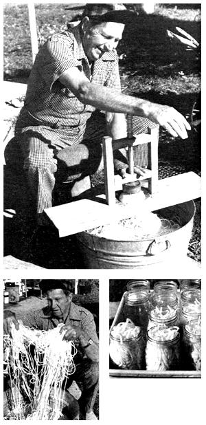

You don't have to eat this root crop "boiled, boiled, or boiled"; not if you boldly . ..
Turnips are a boon to the self-reliant gardener. The leaves are vitamin-packed and delicious, and the mineral-rich roots can easily be stored over the winter in a cool basement or root cellar. (Just cut the tops off to within half an inch of the roots and sink the turnips into boxes filled with either moist sand or sawdust.)
Sad to say, though, Brassica rapa does have an "image problem": Few root crops are as devoid of glamour as the lowly turnip. While its garden mate the potato can end up in such high-class dishes as vichyssoise, and carrots even make it into cake . . . the turnip is usually served boiled or maybe-on special occasions-mashed. Recently, however, O.W. "Ott" Bogner of Crofton, Nebraska, a man who knows a lot about food preparation (he owned a steakhouse and lounge for 37 years), taught me a whole new way to process this vegetable . . . making turnip kraut!
"A Kentucky friend gave me this recipe a number of years ago," Ott says, "and I've been enjoying it ever since. In fact, that same friend constructed a dandy turnip shredder for me-one that gives me spaghetti-like strips-but you can use any kitchen tool with a shredding blade to prepare the roots."
First, Ott peels the turnips with an ordinary paring knife. Then he centers each root on his shredder and turns the handle ... and the blades cut the vegetable into long, continuous strings that spiral down into a clean washtub. Bogner puts these strips into quart canning jars.
"I prefer the wide-mouth type," he told me, "because they're easier to fill."
That done, the krautmaker cuts the turnip strings level with the top of each jar and adds one heaping teaspoon of pickling salt to every quart. Next, he fills the containers with hot tap water and puts the lids on loosely, so that the kraut can ferment. When the fixings are kept in a warm place (ideally 68° to 70°F), their "working" period lasts about six weeks,
After the aging process is complete, the former restaurateur adds enough hot water to refill the jars and puts the lids on . . . tightly this time. He then places the containers in a water-bath canner and brings the water to a full boil for 20 minutes.
"This is to insure proper sealing," Ott explains.
He also lets the jars remain in the canner to cool after the heat is turned off.
The result?
"Well, it does taste different from regular sauerkraut," laughs the good-natured gourmet. "I like it for a change of pace . . . particularly served with ribs, hocks, or-best of all-pigs' feet. In fact, I think turnip kraut's great!"
|
 TOP: Handle in hand, Ott shreds a turnip. LEFT.The spaghetti-like strands that come out are several feet long! ABOVE: Shreds, salt, water, and a bit of processing will equal . .. turnip kraut! |
|
|